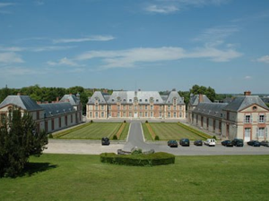

paristechinois
仅以此文献给那曾经令人怀念、但已逝去的两年，也仅以此文献给那些为了梦想而踏上法兰西土地的追梦人。是梦，就要去实现，就当作青春最后的任性。
题记
海明威曾经说过“如果你年轻时就够幸运地生活在巴黎，那么在以后的一生中，你无论去哪里，巴黎都会使你流连，因为巴黎是一场流动的盛宴”。这场盛宴，见证了埃菲尔铁塔在跨年时闪烁、光鲜的时刻，见证了巴黎圣母院在耶稣升天日时庄重、神圣的瞬间，也见证了塞纳河左、右两岸的静谧与喧嚣。在AgroParisTech (以下简称Agro)的两年，那是犹如梦境般的两年，也是真正体验什么叫做生活的两年。
人与情
Agro的法国同学秉承着法兰西这个国度千百年来传承的不羁性格。他们可以在学校一年一度的疯狂聚会上恶搞着学校老师和领导，他们可以在私人聚会时尽兴的玩着脱衣舞，他们也可以发动全体学生组织抗议、罢课活动。这样的生活，也许是你在国内封闭体制下所完全无法体会到的。
与Agro的同学、甚至与法国人相处，你可以很快乐，也可以很不自在。快乐的是，总有一些对于中国怀着好奇眼光的法国同学来询问你一些关于中国的所谓国情，台湾问题、西藏问题、计划生育问题等等。那也许是你开口说法语、结交法国朋友的一个台阶，勇敢的跨出去，也许你就能开始体会法兰西不一样的文化。不自在的是，文化差异、语言障碍总是会让人很意外。有时你会发现置身在一群法国同学中，你无从插话，也不知如何去继续那看似浅薄、无聊的交谈。那也许是留学路上必须经历的自我迷失阶段，不是吗？
身处异国，总需要一份寄托来维持着对于这座城市、或者这个国度的依赖和坚持。你可以选择与法国同学一起在学校大型party或者私人party上疯狂，也可以选择与一起漂泊留学的中国同学聚餐、谈天说地。你甚至可以选择在这充满浪漫气息的国土上谈一场恋爱。法兰西的浪漫不是随处可见的在街角拥吻的情侣，而是年老夫妇始终挽手搀扶时感人的场景。那才是，永恒的浪漫。也许在法兰西的生活，会让人学着如何制造难忘却不浮华的浪漫。
‘事’与故
学事。作为工程师学校，人才培养计划永远是实用主义至上。在Agro的两年，你可以接触到各个领域的知识(环境、经济、农业、营养与健康、能源、企业管理、会计等等)，可以去大公司参观访问，可以进行实地考察，可以在法国做实习积累工作经验，可以选择读双学位丰富个人资历。Agro的课程，忙碌但实用。两年的学习，是一次理论与实践的结合，也是踏上职业道路的一块跳板。Agro毕业的学生，有人选择继续在法兰西深造读博，有人选择在法兰西求职，有人选择回到祖国开创事业。请记住，无论是何选择，必定会经历犹豫、挣扎、挫败，但不要忘记努力过就好了。
玩事。在法国，生活是悠闲的，一定要试着学会享受生活。欧洲大陆，有着无尽的未知去探索。何不利用假期约上三五好友一起来一次探索？何不给自己的心情来一次彻底释放？学校的学生会、学校寝室楼也会不定期的组织一些party，何不和法国人畅快的聊上几句？何不体会一下法式聚会的奇特？
若你有幸，能在法国度过这一段青春岁月。我想，即使有一天，你离开了这个国度。尽管有无限的不舍，但你却带走了一段难忘的回忆，结交了曾经一起战斗在法国的朋友，体验了真正的一个人生活的滋味，学会了如何在寂寞孤独、彷徨无助时的自我救赎，了解了与书本、电影里所描述的完全不一样的巴黎、不一样的法国。这样，就足够了。
尾记
一座城市，一段故事，一份回忆，一个梦想。
追梦的人，加油。
就让梦想放飞在法兰西的国土上。
周珉XZ
写于2012年3月16日
作者简介:
周珉
周珉谈Agro

2012年1月28日星期六